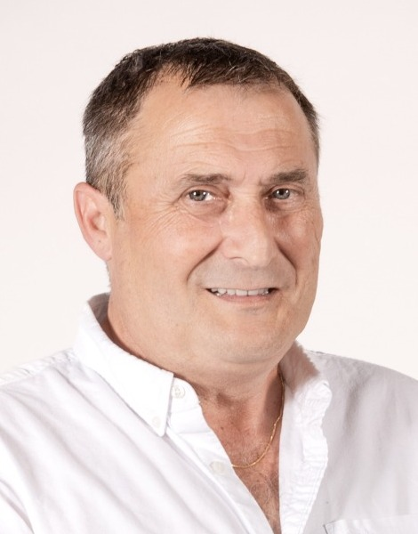

Conception sur mesure
≈ 40 PME
Des logiciels pensés pour leurs métiers
Solutions de gestion commerciale conçues, développées et installées, avec accompagnement et formation des utilisateurs.
62 ans. Près de 40 ans d’expérience.
Une curiosité intacte.
J’ai traversé plusieurs révolutions technologiques sans perdre le plaisir d’apprendre, d’imaginer et de construire. Développeur, manager, responsable de services puis entrepreneur, j’ai toujours cherché à comprendre les besoins et à transformer les idées en solutions concrètes.
Aujourd’hui, j’explore l’intelligence artificielle avec le même enthousiasme et le même pragmatisme qu’à mes débuts. Mon moteur : comprendre, expérimenter, partager et rester utile.

L’expérience est un socle, pas un point d’arrivée.
Je n’ai pas passé ma carrière à maîtriser une technologie. J’ai appris à comprendre les changements — et à en imaginer de nouveaux.
Des logiciels de gestion sur mesure aux applications de grands comptes, des infrastructures télécoms à la formation, puis aux usages de l’IA : chaque étape a été l’occasion d’apprendre, de remettre en question l’existant et de chercher des réponses adaptées.
Ce qui me motive n’est pas la nouveauté pour elle-même. C’est la possibilité de simplifier le quotidien, de rendre un service plus efficace et de donner aux équipes des outils qu’elles ont envie d’utiliser.
Concevoir, déployer, accompagner : des résultats construits dans des contextes très différents.
Solutions de gestion commerciale conçues, développées et installées, avec accompagnement et formation des utilisateurs.
Analyse, conception et développement d’applications dans des environnements de grands comptes.
Environ 9 000 demandes annuelles pour 800 clients, dans une activité mobilisant 14 experts.
Évolution du chiffre d’affaires des services et formations chez Itancia, de 2013 à 2022, avec structuration de l’offre et démarche qualité.
J’aime donner forme à une intuition, tester une expérience utilisateur et confronter le résultat au terrain.
Conception d’une collection de capsules pédagogiques animées : scénarios, vulgarisation, production vidéo et déclinaisons multilingues. Un projet de contenu complet, de l’idée à la réalisation.
PédagogieVyondScénarisationMultilingue
Exploration d’un parcours d’analyse de CV et d’offres d’emploi, avec génération d’aides à la candidature. Un assemblage de code, d’API d’IA et d’automatisations.
PythonAPI OpenAIAirtableMake
Exploration d’un assistant conversationnel destiné aux interventions terrain : dialogue, collecte d’informations et structuration du suivi opérationnel.
IA conversationnelleExpérience utilisateurProcessus métier
Ces projets illustrent une démarche de conception et d’expérimentation. Fit-Pitch et l’agent vocal sont des prototypes/maquettes non industrialisés. DigiFlashes a été produit comme contenu pédagogique, sans déploiement commercial significatif revendiqué.
Les compétences techniques comptent. La façon de travailler avec les autres fait souvent la différence.
L’expérience m’a appris à faire simple. La curiosité m’empêche de rester immobile.
Comprendre les utilisateurs, leurs contraintes et les processus réels avant de proposer une solution.
Explorer des alternatives, faire preuve d’initiative et ne pas confondre habitudes et besoins.
Passer de l’idée à un premier résultat tangible, puis ajuster avec pragmatisme.
Dialoguer avec les métiers, les experts et les décideurs pour construire une réponse partagée.
Expliquer, vulgariser, former et accompagner l’appropriation des nouveaux outils.
Changer de rôle, de méthode ou de technologie sans perdre le sens du service.
Un parcours transversal, du logiciel métier à l’IA appliquée.
Sensibilisation cyber, DigiFlashes, Fit-Pitch, expérimentation d’un agent vocal et certification PSPO I (2026).
Management d’équipes, qualité de service, développement d’activité, outillage SaaS et démarche Qualiopi.
Projets d’infrastructures, applications, télécoms et accompagnement des transformations techniques.
Analyse, développement et conception d’applications métiers.
Cycle complet de conception, développement, installation et formation auprès de PME.
Je souhaite contribuer à des projets concrets où l’analyse métier, l’expérience opérationnelle, la pédagogie et l’innovation se renforcent mutuellement. Applications métiers, transformation numérique, Product Ownership, IA appliquée : ce qui m’intéresse, c’est l’utilité du résultat et la qualité de la collaboration.
Basé à Arradon, près de Vannes · Ouvert aux collaborations locales et au temps partagé.
Échanger sur un projetPour me contacter, 07 49 11 40 61 ou lemarchando@gmail.com.